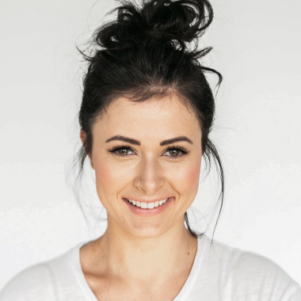

Брестская ОЦ СДЮШОР профсоюзов по легкой атлетике
История школы
Дата основания спортивной школы: сентябрь 1973 года. СДЮШОР «Спартак» была реорганизована в Учреждение «Брестская областная центральная специализированная детско-юношеская школа олимпийского резерва профсоюзов по легкой атлетике» в 2010 году.
Традиции школы
Ежегодно проводятся два турнира по футболу и борьбе вольной. Зимой – Рождественский турнир по футболу, осенью – республиканские соревнования на призы Почетного гражданина г.Могилева Королева Н.Ф.
Спортивные достижения школы
По праву гордиться школа и победителями первенства Советского Союза по борьбе вольной — Сергеем Хлыстуновым, Алексеем Ефремовым, Артуром Зайцевым и призерами — Алексеем Шеремело, Игорем Романовым. Безусловно, огромная заслуга в этих достижениях тренерского состава. В него всегда входили люди, любящие свое дело, хорошие педагоги, умеющие находить подход к начинающим спортсменам. (Зыбинов Е.И., Куксенков Н.Г., Мельков В.А., Лукьянчиков Н.С.).
За годы своего существования СДЮШОР дала путёвку в жизнь многим спортсменам и сегодня её тренерам есть, чем гордиться. До 1991 года звание «Мастер спорта СССР» получили 55 воспитанников школы, а звание «Мастер спорта Республики Беларусь» было присвоено 35 учащимся. Трое удостоено звания «Мастер спорта международного класса», среди которых одна девушка — бронзовый призёр Чемпионата мира по борьбе вольной среди молодёжи в 2008 году Наталья Шинкарёва и футболисты Владимир Юрченко и Дмитрий Верховцов, в составе национальной молодёжной сборной команды РБ на Чемпионате Европы в 2011 году заняли 3 место. Что позволило национальной команде РБ по футболу принять участие в Олимпийских играх 2012 года в Лондоне.